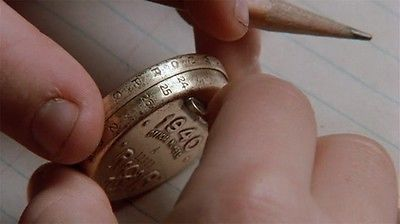

Substitution Cipher
The Substitution Cipher is a very simple way to encrypt your messages. And in this entry, I'll explain how. First, imagine you want to encrypt the following message:
Be sure to drink your Ovaltine
In this unencrypted (plaintext) message each of its letters map to the same letter.
A≡A
B≡B
C≡C
D≡D
E≡E
...
...
...
Z≡Z
Now lets replace the letters on the right side with numbers. We are going to need 26 different letters because there are 26 letters in the English alphabet. Lets just use the integers from 1 to 26 (inclusive). Now our mapping looks like this:
A≡1
B≡2
C≡3
D≡4
E≡5
...
...
...
Z≡26
Now by replacing the letters in our original message with their number equivalent (make sure to leave a space between adjacent numbers), our message looks like this:
2 5 19 21 18 5 20 15 4 18 9 14 11 25 15 21 18 15 22 1 12 20 9 14 5
Now this looks pretty encrypted to a passerby, but a determined person would probably try to decrypt this string of numbers by using the mapping scheme of A≡1, B≡2, C≡3, ... because it is in the order of the alphabet. This can be made much safer if you use a random mapping of numbers instead of count up from A to Z. This is what the "Little Orphan Annie's Secret Society" decoder pin did. It was a pin that on its rim had a random mapping of letters to numbers.
-Image taken from "A Christmas Story" (1983)
-Video taken from TBS